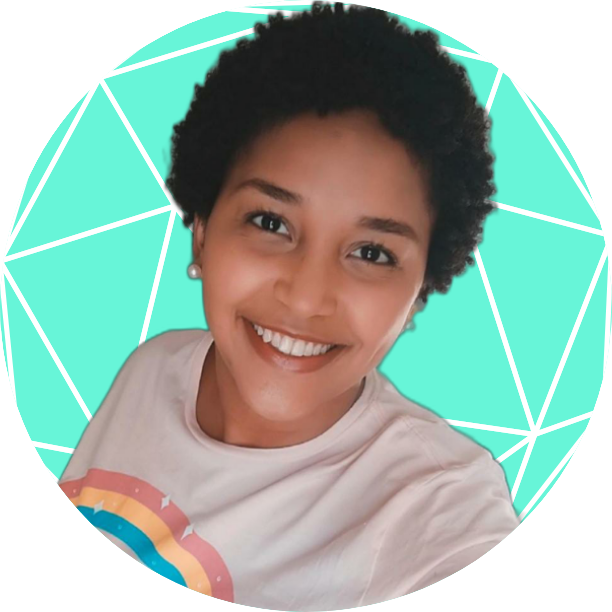

Comecei minha carreira na área da saúde como técnica em enfermeira no Hospital Américas em 2016,
através de um programa para primeiro emprego.
Em 2018, recebi a oportunidade de atuar como técnica em enfermagem no Hospital Barra D'or, onde
em 2019 recebi minha primeira oportunidade como Enfermeira. Lá comecei atuando em uma unidade
semi-intensiva, que me preparou para o início de uma jornada incrível na área de cuidados
intensivos. Neste processo condluí minha primeira pós-graduação em Terapia Intensiva.
Durante a pandemiam do covid-19, pude atuar na unidade de terapia ventilatória do Hospital São
Lucas Copacabana temporariamente.
Entretanto, havia em minha o sonho de atuar em emergência, e essa oportunidade chegou no
Hospital Pasteur, onde muito aprendi sobre cuidados à pacientes agudizados, aplicação de
protoclos AVC e IAM e triagem de paciente pelo protocolo Machester.
Sob uma busca de novas oportunidades e crescimento profissional, me dirijo ao estado de São
Paulo em 2021, onde adiquiro minha primeira experiência na rede pública de saúde no Hospital
Arthur Ribeiro de Saboya.
Em 2022, recebo a oportunidade de retornarao ramo de hospitais acreditados, e inicio uma atuação
no Hospital Sepaco, onde permoneço até hoje aprendendo novas tecnologias em cuidados intensivos.
E mediante as inovações tecnológicas que vivencio percebo o quanto à tecnologia e saúde então
interligadas, o que me leva ao mestrado em Telessaúde de Telemedicina, me trazendo de volta à
minha instituição educacional de oriegem.
Atualmente além do mestrado e dos cursos de atualização, estou cursando pós-graduação em
estratégia em saúde de família, à título de ampliar meus horizontes para integralidade do
cuidado.
Acompanhe comigo a estes estudos
A telemedicina é um processo avançado para monitoramento de pacientes, troca de informações médicas e análise de resultados de diferentes exames.
SAIBA MAIS
Na primeira parte do estudo, realizou-se uma observação in loco para o diagnóstico de delirium; em seguida, fez-se uma pesquisa em prontuário para o levantamento de dados epidemiológicos.
SAIBA MAIS
Confira os 3 principais desafios da telemedicina.
Fique por dentro dos principais desafios encontrados por médicos e pacientes após a
permissão do exercício da telemedicina